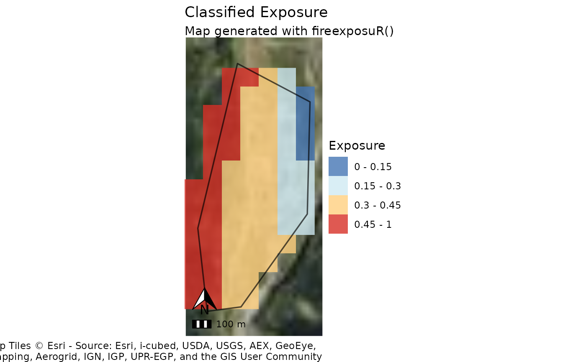

Map exposure with a classified scale (Deprecated)
Source:R/fire_exp_map_class.R
fire_exp_map_class.RdThis function still works, but will be removed in future
versions of the package. The same functionality is now included in
fire_exp_map(). .
Usage
fire_exp_map_class(
exposure,
aoi,
classify = c("local", "landscape", "custom"),
class_breaks,
zoom_level,
title = "Classified Exposure"
)Arguments
- exposure
SpatRaster (e.g. from
fire_exp())- aoi
(Optional) SpatVector of an area of interest to mask exposure
- classify
character, either
"local","landscape", or"custom", to specify classification scheme to use. The default is"local". If set to"custom": the parameterclass_breaksmust be used.- class_breaks
vector of numeric values between 0-1 of the upper limits of each custom class. Ignored unless
classify = "custom". See details.- zoom_level
(Optional) numeric, set the zoom level for the basemap based on the extent of your data if defaults are not appropriate. See details. Defaults if:
classify = "local"or"custom"the zoom level default is12classify = "landscape"the zoom level default is7
- title
(Optional) String. A custom title for the plot. The default is
"Classified Exposure"
Details
This function returns a standardized map with basic cartographic elements.
The plot is returned as a ggplot object which can be exported/saved to multiple image file formats.
This function visualizes the outputs from fire_exp() with classes.
Classes can be chosen from the pre-set "local" and "landscape" options,
or customized. To use a custom classification scheme, it should be defined
with a list of numeric vectors defining the upper limits of the breaks. A
Nil class is added automatically for exposure values of exactly zero.
Local classification breaks are predefined as c(0.15, 0.3, 0.45, 1):
Nil (0)
0 - 0.15
0.15 - 0.3
0.3 - 0.45
0.45 - 1
Landscape classification breaks are predefined as c(0.2, 0.4, 0.6, 0.8, 1):
Nil (0)
0 - 0.2
0.2 - 0.4
0.4 - 0.6
0.6 - 0.8
0.8 - 1
Spatial reference
This function dynamically pulls map tiles for a base map. The inputs are projected to WGS 84/Pseudo-Mercator (EPSG:3857) to align them with the map tiles.
Zoom level
The map tile zoom level may need to be adjusted. If the base map is blurry, increase the zoom level. Higher zoom levels will slow down the function, so only increase if necessary. Reference the OpenStreetMap Wiki for more information on zoom levels.
Examples
# read example hazard data
hazard_file_path <- "extdata/hazard.tif"
hazard <- terra::rast(system.file(hazard_file_path, package = "fireexposuR"))
# read example area of interest
polygon_path <- system.file("extdata", "polygon.shp", package ="fireexposuR")
aoi <- terra::vect(polygon_path)
# compute exposure
exposure <- fire_exp(hazard)
fire_exp_map_class(exposure, aoi, classify = "local")
#> Warning: 'fire_exp_map_class' is deprecated.
#> Use 'fire_exp_map' instead.
#> See help("Deprecated")
